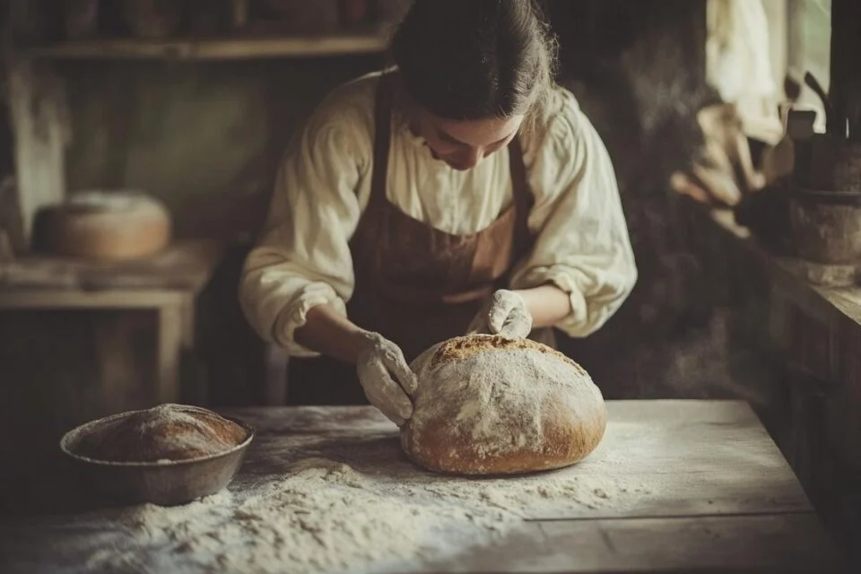
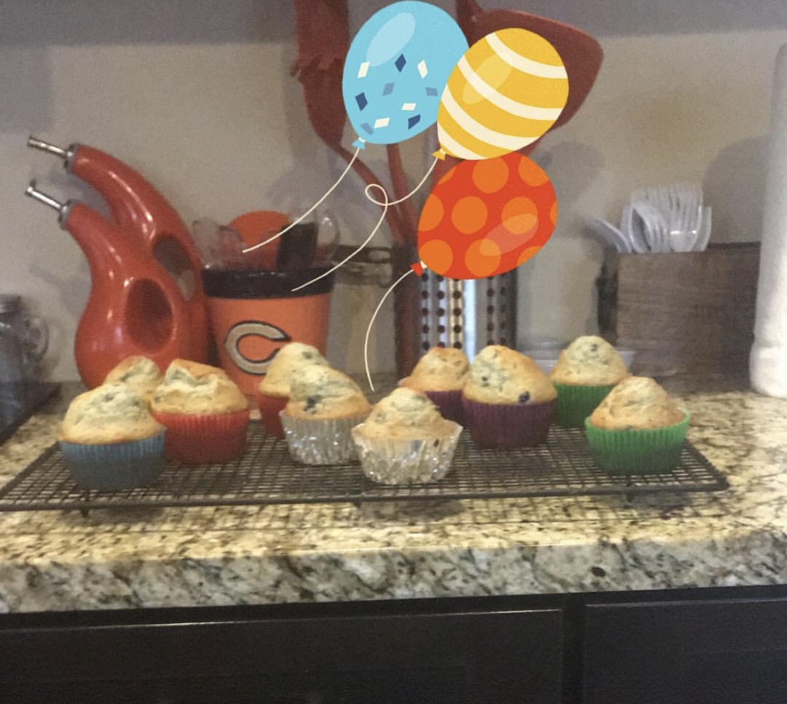

History of Baking

The first evidence of baking dates back to 14,000 years ago! This was in a prehistoric era where flatbread was made with water and grains.
As agriculture began to evolve, so did baking. Different techniques were adapted started with the Egyptians using pottery and yeast to bake bread.
Now baking has transformed into something people do to survive, into a fun and creative hobby!
My Expirence with Baking

I have been baking since I was 12. I first started by taking a YMCA baking class for pre-teens. After this class, I fell in love with the creativity in baking
I love exploring and creating my own recipes and trying new recipes from creators online!
These recipes provided, I have taken from various creators online but added my own twist and modifications to ensure a perfect taste!